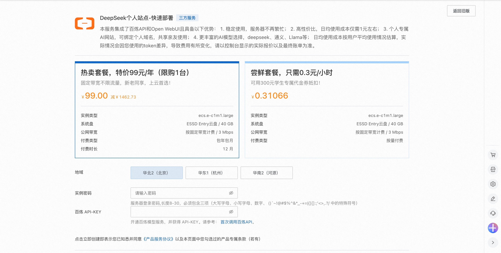
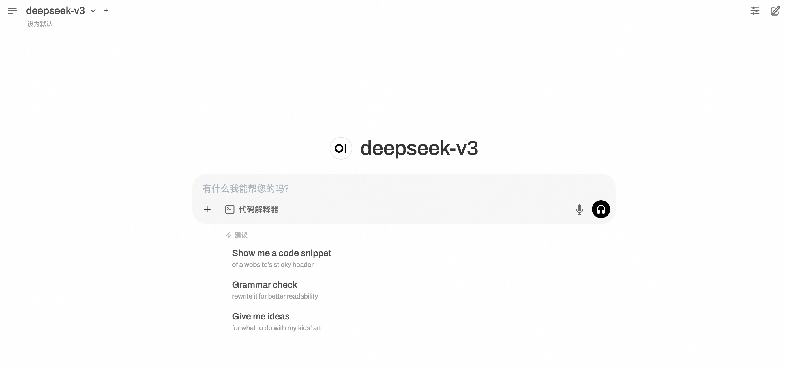
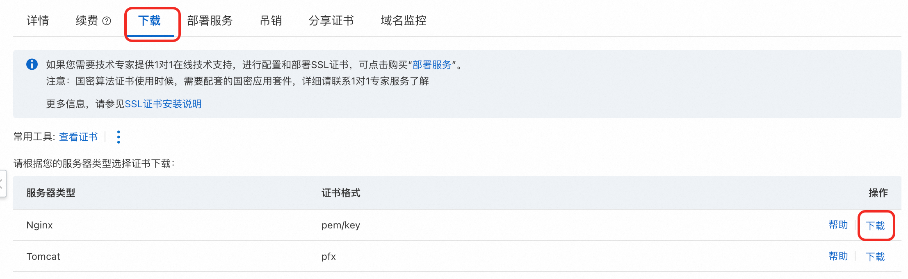

百炼 Open WebUI 服务实例部署文档
Open WebUI和百炼介绍
Open WebUI 是一个功能丰富且用户友好的自托管 Web 用户界面（WebUI），它被设计用于与大型语言模型（LLMs）进行交互，特别是那些由 Ollama 或与 OpenAI API 兼容的服务所支持的模型。Open WebUI 提供了完全离线运行的能力，这意味着用户可以在没有互联网连接的情况下与模型进行对话，这对于数据隐私和安全敏感的应用场景尤为重要。 以下是 Open WebUI 的一些主要特点： 1. 直观的界面：Open WebUI 的界面受到 ChatGPT 的启发，提供了一个清晰且用户友好的聊天界面，使得与大型语言模型的交互变得直观。 2. 扩展性：这个平台是可扩展的，意味着可以通过添加新的插件或功能来定制和增强其能力，适应不同的使用场景和需求。 3. 离线操作：Open WebUI 支持完全离线运行，不依赖于网络连接，适合在任何设备上使用，无论是在飞机上还是在偏远地区。 4. 兼容性：它兼容多种 LLM 运行器，包括 Ollama 和 OpenAI 的 API，这使得用户可以从多个来源选择和运行不同的语言模型。 5. 自托管：用户可以在自己的服务器或设备上部署 Open WebUI，这为数据隐私和控制提供了更高的保障。 6. Markdown 和 LaTeX 支持：Open WebUI 提供了全面的 Markdown 和 LaTeX 功能，让用户可以生成富文本输出，这在科学和学术交流中非常有用。 7. 本地 RAG 集成：检索增强生成（RAG）功能允许模型利用本地存储的数据进行更深入和具体的回答，增强了聊天交互的功能。 通义百炼 是阿里巴巴云推出的一款先进的多模态预训练模型。它结合了自然语言处理（NLP）和计算机视觉（CV）技术，能够理解和生成文本、图像、视频等多种类型的数据。通义百炼的设计目标是为开发者和企业提供一个强大的工具，以便在各种应用场景中实现更高效、更智能的数据处理和分析。
本服务将openwebui和百炼集成，一键提供基于百炼的ui服务
计费说明
Open WebUI面板在阿里云上的费用主要涉及： * 所选GPU云服务器的规格 * 磁盘容量 * 公网带宽
计费方式：按量付费（小时）或包年包月 预估费用在创建实例时可实时看到。
百炼模型调用费用: * 当您首次开通百炼时，平台会自动为您发放各模型的新人专属免费额度，详情请看百炼新人免费额度。
部署架构
部署架构采用ECS(云服务器)单机部署

RAM账号所需权限
| 权限策略名称 | 备注 |
|---|---|
| AliyunECSFullAccess | 管理云服务器服务（ECS）的权限 |
| AliyunVPCFullAccess | 管理专有网络（VPC）的权限 |
| AliyunROSFullAccess | 管理资源编排服务（ROS）的权限 |
| AliyunComputeNestUserFullAccess | 管理计算巢服务（ComputeNest）的用户侧权限 |
部署服务
- 单击部署链接，进入服务实例部署界面，根据界面提示，填写参数。 
-
部署参数需要百炼API-KEY，登录百炼控制台，光标悬停在右上角人行图标上，点击API-KEY。

点击创建我的API-KEY，并复制它备用。API-KEY是个人保密信息，切勿泄漏。若未开通百炼，请点击开通百炼的模型服务完成开通。

-
确认订单完成后点击立即创建。
-
等待部署完成后就可以开始使用服务，进入服务实例详情点击Address访问。

-
注册账号并登录服务。

-
开启你的AI对话。 
进阶操作（使用域名并绑定证书）
使用IP地址，例如http://公网IP:8080，访问自己部署的AI网站，不方便记忆，更不够酷。通过域名访问时，完整的方式是：https://example.com。大家平时可能不会注意到域名最左边的https。这是目前最常见的访问互联网的协议。早期的协议为http，后来为了增强安全性，在http后面加了个 "s"，即超文本传输安全协议，使用https需要SSL证书。现在大多数的网站都使用https，如果使用http，浏览器会提示不安全。另外，在开发微信小程序，苹果iOS app时，要求必须使用https。
一、购买域名，并完成域名备案，域名备案通常几天就可以完成。
二、获取免费SSL证书
- 登入阿里云数字证书管理服务（原SSL证书）网站 https://www.aliyun.com/product/cas 点击“登录控制台”
-
点击SSL证书管理
-
点击“个人测试证书（原免费证书）”，然后点击“立即购买”。

-
选择“个人测试证书”，可以获得20个免费的个人测试证书。
-
购买完成后，点击“创建证书”，证书类型选择上一步购买的“个人测试证书（免费版）”，在“域名名称”中，输入域名，例如example.com, 此处可以不用输入www.example.com。然后点击“确定”。
-
当证书显示“已签发”时，即可以正常使用。请注意，免费证书的有效期一般为三个月。
-
点击“更多”，准备下载证书。

-
点击“下载”的tab，点击Nginx后面的“下载”，即可以完成证书的下载。

-
下载完的证书是一个压缩包，点击解压缩后，文件夹里有两个文件，分别以key和pem作为后缀。
三、在ECS云服务器上安装并配置nginx
# 更新安装包清单
sudo apt update
# 安装nginx
sudo apt install nginx
# 确认nginx是否安装成功
sudo systemctl status nginx
四、创建SSL证书存放目录并保存SSL证书到云服务器ECS
# 在nginx配置目录中，创建SSL证书存放目录
mkdir /etc/nginx/ssl
# 进入SSL证书存放目录
cd /etc/nginx/ssl
# 创建如下两个文件,此处假设域名为example.com，需要把域名替换成您自己的域名
touch example.com.key
touch example.com.pem
# 在电脑上，打开上一步保存的example.com.key文件，复制其中的内容
# 回到ECS云服务器，编辑example.com.key这个文件
vim example.com.key
# 点击i，进入编辑模式，并将刚复制的内容，粘贴到云服务器ECS上的example.com.key文件中，完成后，点击ecs退出编辑，输入!wq，保存并退出
# 在电脑上，打开上一步保存的example.com.pem文件，复制其中的内容
# 回到ECS云服务器，编辑example.com.key这个文件
vim example.com.pem
# 点击i，进入编辑模式，并将刚复制的内容，粘贴到云服务器ECS上的example.com.pem文件中，完成后，点击ecs退出编辑，输入!wq，保存并退出
五、配置nginx
# 进入sites-available目录
cd /etc/nginx/sites-available
# 创建配置文件，注意，此处需要换成您自己的域名
touch example.com
使用vim example.com命令，打开example.com文件，点击i进行编辑，粘贴以下内容。 注意：将下列内容中，所有的example.com替换成您自己的域名。
server {
listen 80;
server_name example.com www.example.com;
# Redirect all HTTP requests to HTTPS
return 301 https://$host$request_uri;
}
server {
listen 443 ssl;
server_name exameple.com www.example.com;
# SSL Configuration
ssl_certificate /etc/nginx/ssl/example.com.pem;
ssl_certificate_key /etc/nginx/ssl/example.com.key;
# Security headers (optional but recommended)
add_header Strict-Transport-Security "max-age=31536000" always;
add_header X-Content-Type-Options nosniff;
add_header X-Frame-Options "SAMEORIGIN";
add_header X-XSS-Protection "1; mode=block";
# Proxy settings
location / {
proxy_pass http://localhost:8080; # Your service running on port 8080
proxy_set_header Host $host;
proxy_set_header X-Real-IP $remote_addr;
proxy_set_header X-Forwarded-For $proxy_add_x_forwarded_for;
proxy_set_header X-Forwarded-Proto $scheme;
# WebSocket support (if needed)
proxy_http_version 1.1;
proxy_set_header Upgrade $http_upgrade;
proxy_set_header Connection "upgrade";
}
}
六、建立软连接
注意：将下列内容中，所有的example.com替换成您自己的域名。
sudo ln -s /etc/nginx/sites-available/example.com /etc/nginx/sites-enabled/
重新load nginx
sudo systemctl reload nginx
七、配置域名解析
进入域名解析dns控制台 https://dns.console.aliyun.com/ 选中需要使用的域名，点击“解析设置”
点击添“加记录”
按照如下方式填写记录内容，然后点击“确定”，约1分钟后生效。即可以通过域名访问您部署的AI网站。
FAQ
DeepSeek-R1开启思考模式 参考社区方案